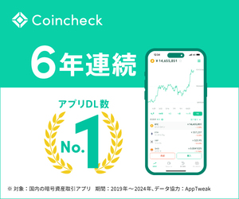
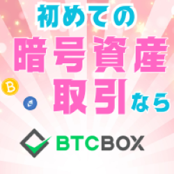

このページの見方
- まずは結論tableで自分に近い選び方を確認
- 比較表で取引形式・コスト・銘柄数の違いを確認
- 気になる会社だけ各社詳細へ進む
仮想通貨取引所比較
仮想通貨取引所は、販売所だけで決めると実質コストが見えにくくなることがあります。 このページでは、結論→比較表→各社詳細の順で、初心者〜中級者でも違いをつかみやすいように整理しています。
迷った場合は「GMOコイン（初心者・送金）」か「コインチェック（アプリ）」から見ていくと整理しやすいです。
比較基準
このページでは、単純な順位ではなく、 取引形式（販売所 / 取引所）・実質コスト・取扱銘柄・入出金や送金のしやすさ・アプリの使いやすさ・セキュリティや補助機能 を主な比較軸にしています。
何を重視するかで向いている取引所は変わります。 そのため、ランキングとして押し切るのではなく、目的別で比較しやすい形に整理しています。
販売所だけでなく、取引所形式に対応しているかを見ると、コスト感の違いをつかみやすくなります。
手数料の有無だけでなく、スプレッドを含めた実質コストで見ると比較しやすくなります。
主要銘柄だけで十分か、アルトコインも含めて幅広く比較したいかで候補が変わります。
日本円の入出金や暗号資産の送金を使う予定がある人は、この部分も見ておきたい項目です。
積立や価格確認をスマホ中心で行いたい人は、見やすさや操作のわかりやすさも重要です。
二段階認証、資産管理の考え方、積立やステーキングなどの補助機能も比較の判断材料になります。
まず結論
どこから見ればいいか迷う人向けに、重視する軸ごとに入口を整理しました。 順位ではなく、何を優先したいかで見分けるための結論です。
目的別の早見
ざっくり候補を絞りたい人向けに、どの会社から見ればよいかを短くまとめています。
比較の見方
販売所だけでなく、取引所形式の有無とアプリの使いやすさを先に見ると候補を絞りやすくなります。
販売所は始めやすさ、取引所はコスト感を比較しやすい傾向があります。両方ある会社は使い分けしやすいです。
まずは結論tableで方向性をつかみ、比較表で違いを確認してから各社詳細へ進むと整理しやすいです。
一覧比較
主要な国内取引所を、取引形式 / コスト・取扱銘柄・特色の軸で見比べられるように整理しています。
表の文言は細かくしすぎず、まず違いをつかみやすい粒度にそろえています。
| サービス | 取引形式 / コスト | 取扱銘柄 | 特色 |
|---|---|---|---|
|
GMOコイン
詳細を見る |
販売所 / 取引所 取引所形式も確認しやすい |
主要銘柄を広くカバー | 初心者向け / 送金も見やすい / 積立にもつなげやすい |
|

コインチェック
詳細を見る |
販売所中心 一部は取引所形式対応 |
主要＋アルトも比較しやすい | アプリ重視 / スマホで始めやすい / 積立の入口に向く |
|

BTCBOX
詳細を見る |
取引所中心 板取引を意識しやすい |
取扱銘柄は絞られめ | コスト重視 / シンプル / 売買中心で見やすい |
.png)
OKJ
詳細を見る |
販売所 / 取引所 機能もあわせて比較しやすい |
銘柄数の広さが特徴 | 銘柄重視 / 収益サービスあり / 選択肢を広く見たい人向け |
横にスクロールして確認できます。
各社詳細
比較表で気になった会社を、特徴・向いている人・注意点の流れで確認できます。
初心者向け / 送金重視
初めての仮想通貨口座として比較しやすく、売買だけでなく送金や出金の使い勝手も見やすい取引所です。
最初の1社としてバランス重視で選びたい人、送金や出金の使いやすさまで見ておきたい人に向いています。
コストだけを最優先する人は、実際に使う場面で販売所と取引所のどちらを使うかも含めて確認した方が判断しやすいです。
アプリ重視
アプリの見やすさや使い始めやすさを重視して比較したい人に向いた仮想通貨取引所です。
スマホアプリ中心で始めたい人、できるだけ直感的な操作感を重視したい人に向いています。
板取引によるコスト感を最優先したい人は、取引所形式を重視しやすい他社もあわせて見た方が比較しやすいです。
コスト重視
板取引を前提に、売買コストをできるだけ意識して比較したい人向けの仮想通貨取引所です。
板取引を使ってコストを意識したい人、売買中心でシンプルに比較したい人に向いています。
取扱銘柄の広さや付帯機能も重視したい人は、銘柄数や周辺機能が広い他社もあわせて確認した方が判断しやすいです。
銘柄数重視
主要銘柄だけでなく、選択肢の広さも含めて比較したい人向けの仮想通貨取引所です。
主要銘柄だけでは物足りず、アルトコインの選択肢や周辺機能まで広く見たい人に向いています。
まずはできるだけシンプルに、1社で最低限の比較だけをしたい人は、より入門向けの会社から見た方が整理しやすいことがあります。
関連サービス
ここは現物取引所とは用途が異なるサービスをまとめた補足ゾーンです。目的に応じて分けて確認できます。
価格変動を取引するタイプを見たい人は、マネックスの暗号資産CFD を別軸で確認できます。
保有した暗号資産を活用したい人は、PBRLending のようなレンディングサービスも候補になります。
損益計算や税務整理を見たい人は、Cryptact のような申告補助サービスも確認しやすいです。
基礎記事導線
仮想通貨の基礎や税金の考え方から整理したい人向けに、学習導線もつなげています。
FAQ
補足
当サイトは各社の公開情報をもとに、取引形式・コスト感・取扱銘柄・送金や出金のしやすさ・アプリの使いやすさを基準に比較整理しています。
リンクは一部アフィリエイトを含みます。掲載情報は比較のために要点をまとめたものであり、最終判断の前には必ず公式サイトで最新情報をご確認ください。
情報は参考用の整理であり、取引判断を断定するものではありません。